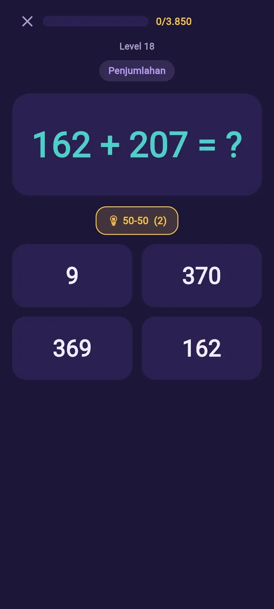
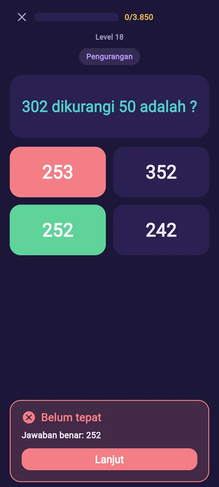
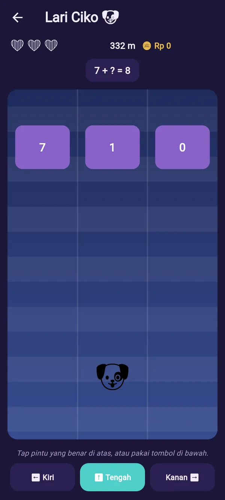
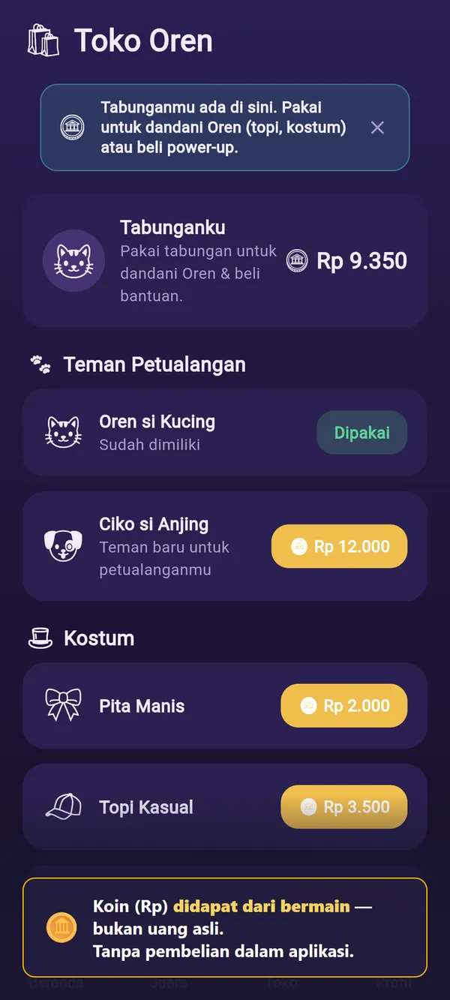
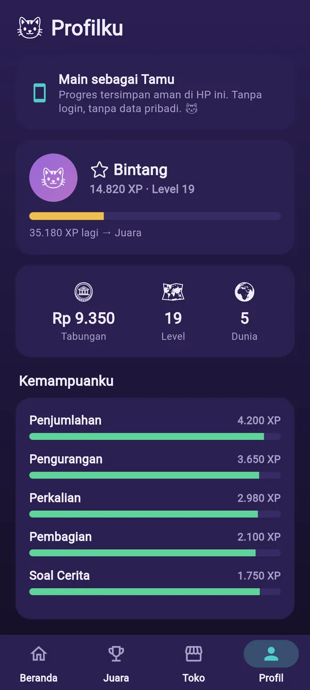

AyoMath
Game matematika SD yang gratis, offline, dan ramah anak.
A free, offline, child-friendly primary-school maths game.
AyoMath adalah aplikasi latihan matematika untuk anak SD Kelas 1–6 di Indonesia.
Dirancang sebagai proyek sosial: gratis, tanpa iklan, dan bisa dipakai
tanpa internet — agar bisa dipakai di mana saja, termasuk di daerah dengan
jaringan terbatas.
AyoMath is a maths practice app for primary-school children in Grades 1–6 in
Indonesia. Designed as a social project: free, ad-free, and usable
without internet — so it works anywhere, including areas with limited
connectivity.
📚
Sesuai Kurikulum MerdekaKelas 1–6, dari berhitung dasar sampai pecahan, desimal, geometri, dan soal cerita bertingkat.
Follows Kurikulum MerdekaGrades 1–6, from basic arithmetic to fractions, decimals, geometry and multi-step word problems.
📶
Bekerja offlineProgres belajar tersimpan di HP. Tidak butuh akun, tidak butuh kuota.
Works offlineLearning progress is saved on the phone. No account, no data plan needed.
🛡️
Aman & menghormati privasiTanpa iklan, tanpa pelacak, tanpa data pribadi anak. Ada batas waktu bermain & Area Orang Tua.
Safe & privacy-respectingNo ads, no trackers, no personal data from children. Includes a play-time limit & a Parent Area.
⭐
Belajar nilai baikSetiap petualangan menyelipkan nilai: kebersihan, kejujuran, hormat, dan kebaikan hati.
Learning good valuesEvery adventure weaves in a value: cleanliness, honesty, respect and kindness.
Mode & Fitur
Modes & Features
Lebih dari sekadar latihan. AyoMath punya banyak mode — dan semua mulai dari yang mudah, lalu makin menantang seiring kemampuan anak bertambah, jadi selalu pas dengan levelnya.
More than just drills. AyoMath has many modes — and all of them start easy, then grow more challenging as the child's ability grows, so it always matches their level.
🚀
PetualanganJalur belajar utama tanpa batas. Anak naik level dan menjelajah Dunia demi Dunia; soal bertambah sulit secara bertahap mengikuti kemajuannya. Kumpulkan XP & stiker koleksi.
AdventureThe main, endless learning path. Children level up and explore World after World; problems get harder step by step as they progress. Collect XP & collectible stickers.
🪐
Belajar per KelasPilih Kelas 1–6 dan latih topik tertentu — penjumlahan, pengurangan, perkalian, pembagian, pecahan, desimal, geometri, sampai soal cerita.
Learn by GradePick Grade 1–6 and practise a specific topic — addition, subtraction, multiplication, division, fractions, decimals, geometry, all the way to word problems.
🎲
Permainan AsikGame singkat yang mengasah logika & ketelitian: Pilah Cipi, Lari Ciko, Tangram Leo, Sudoku Tora, Lukis Bobo, dan Toko Oren. Tingkat kesulitannya naik saat anak makin mahir.
Fun GamesShort games that sharpen logic & accuracy: Cipi's Cleanup, Ciko's Run, Leo's Tangram, Tora's Sudoku, Bobo's Painting and Oren's Shop. Difficulty rises as the child gets better.
⚡
Mode CepatLatih kecepatan berhitung di luar kepala. Target waktunya makin ketat untuk melatih kelancaran (fluency).
Quick ModeTrain mental-arithmetic speed. The time target gets tighter to build fluency.
🧠
Mode Jenius — bertaraf internasionalSoal penalaran mendalam & non-rutin per kelas, dipatok (benchmark) ke standar Singapura & Korea — negara dengan prestasi matematika terbaik dunia. Memakai model bar, langkah bertingkat, dan berpikir mundur; kesulitannya terus meningkat. Raih Bintang Jenius ⭐ tanpa memengaruhi progres utama.
Genius Mode — international standardDeep, non-routine reasoning problems for each grade, benchmarked against Singapore & Korea — the world's top-performing countries in maths. Uses bar models, multi-step working and working backwards; difficulty keeps rising. Earn Genius Stars ⭐ without affecting the main progress.
🏆
Papan JuaraAdu XP dengan teman sekelas, se-provinsi, dan seluruh Indonesia. Tanpa nama asli — tetap aman & privat.
LeaderboardCompete on XP with classmates, your province and all of Indonesia. No real names — safe & private.
🛍️
Toko & ProfilBelanja topi & teman hewan dengan koin hasil bermain, lalu pantau kemampuan, level, dan pangkat anak di Profil.
Shop & ProfileBuy hats & animal friends with coins earned by playing, then track the child's skills, level and rank in the Profile.
📈
Tumbuh bersama anakTidak ada mode yang “terlalu mudah” untuk selamanya. Dari berhitung dasar sampai penalaran ala Singapura/Korea di Mode Jenius, tingkat kesulitan naik bertahap — menantang tanpa membuat anak menyerah.
Grows with the childNo mode stays “too easy” forever. From basic arithmetic to Singapore/Korea-style reasoning in Genius Mode, difficulty rises gradually — challenging without making children give up.
Lihat AyoMath
See AyoMath
Belajar jadi petualangan seru — naik level, soal pilihan ganda, koreksi yang lembut, dan banyak permainan asik.
Learning becomes an adventure — level up, multiple-choice problems, gentle corrections and lots of fun games.







🪙 Koin (Rp) di dalam game hanya didapat dengan bermain — bukan uang asli, dan tidak ada pembelian dalam aplikasi.
🪙 In-game coins (Rp) are earned only by playing — not real money, and there are no in-app purchases.
🤝
Mendukung guru IndonesiaAyoMath mendukung IOA (ioa.or.id) dalam meningkatkan kompetensi guru di Indonesia — termasuk pelatihan kepemimpinan transformasional bagi para guru.
Supporting Indonesian teachersAyoMath supports IOA (ioa.or.id) in raising teacher competence across Indonesia — including transformational-leadership training for teachers.